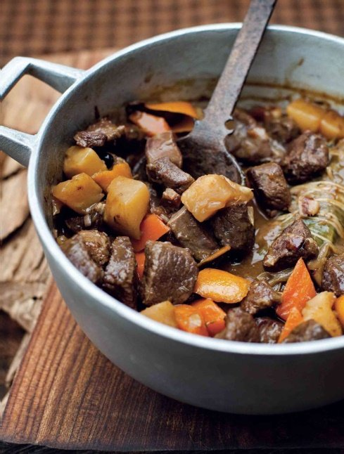

Venison Stew with Celeriac and Orange

I mostly cook venison in the autumn, but it can be stored in the freezer for several months to enjoy once the game season is over. I devised this dish recently when a friend came over for dinner and gave me a haunch of venison. It may be a Scottish thing, but I was over the moon! As with most game, root vegetables and fruit go well with venison. Use a good-quality red wine – not a premium one, but don’t be tempted to buy a cheap bottle.
Heat the oven to 160°C. Dust the venison lightly with flour and season with salt and pepper. Heat a heavy-based ovenproof sauté pan (or flameproof casserole) over a medium heat and add a good drizzle of olive oil. You will need to brown the venison in two batches. When the oil is hot, add half of the venison pieces with half of the butter. Colour the meat all over for 4–5 minutes, then remove with a slotted spoon and set aside. Repeat with the second batch.
Return the pan to the heat and drizzle in a little more olive oil. Add the bacon lardons, onion, celeriac, carrots, garlic and juniper berries. Lower the heat slightly and sweat gently for 4–5 minutes, stirring occasionally. Add the bouquet garni and orange zest and sweat for another 2–3 minutes. Pour in the orange juice and let bubble to reduce by half.
Return the meat to the pan and pour in the red wine to cover. Bring to the boil and skim off any scum from the surface. Pour in the chicken stock and bring to a simmer. Season with salt and pepper, put a lid on the pan and place in the oven. Cook for 1 ½ hours or until the venison is tender, checking occasionally and topping up with a little more stock if needed.
Scatter the chopped parsley over the stew just before serving.